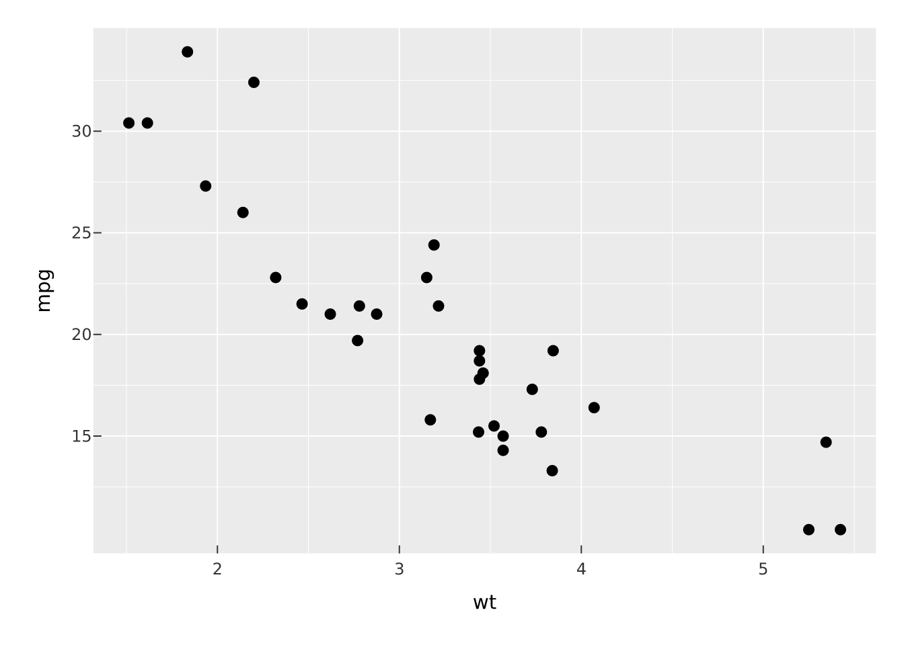
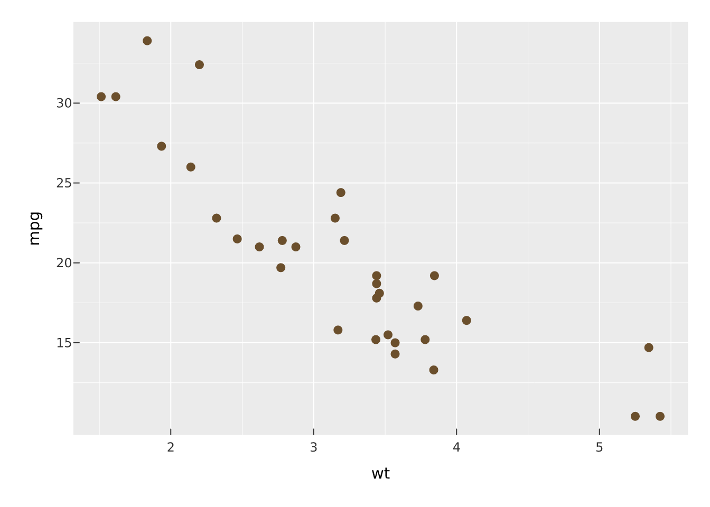

# install.packages("pak")
pak::pak("r-vellum/vellumverse")This is the short path from a data frame to a finished plot. The ecosystem article explains why the pieces are split the way they are; here we use them.
Install and attach
The ecosystem compiles a Rust crate (inside vellum), so you need a Rust toolchain (cargo/rustc) on your machine alongside R. With that in place:
vellumverse is a meta-package. Attaching it attaches the three packages that do the real work, so a single call puts the whole grammar on your search path:
library(vellumverse)
#> ── Attaching packages ───────────────────────────────────── vellumverse 0.2.0
#> ──
#> ✔ vellum 0.2.0.9000 ✔ vellumplot 0.3.0.9000
#> ✔ vellumwidget 0.3.0.9000
#> ── Conflicts ──────────────────────────────────────── vellumverse_conflicts() ──
#> ✖ vellumplot::linear_gradient masks vellum
#> ✖ vellumplot::md masks vellum
#> ✖ vellumplot::radial_gradient masks vellum
#> ✖ vellumplot::sketch masks vellumYou now have vplot() and the marks (from vellumplot), the scene and rendering primitives (from vellum), and as_widget() (from vellumwidget).
Your first plot
Every plot starts with vplot() on a data frame, then adds a mark. A mark maps columns to visual channels (position, colour, size), and the arguments are ordinary column names, evaluated in the data:
vplot(mtcars) |>
mark_point(x = wt, y = mpg)
There is no aes() and no +. Aesthetics are named arguments on the mark, and layers are joined with the base pipe |>.
Map a column to colour
Give an aesthetic a column and it becomes a channel with a legend; give it a bare value and it becomes a constant. Here color = hp is a channel, trained into a continuous scale:
vplot(mtcars) |>
mark_point(x = wt, y = mpg, color = hp) |>
scale_color_continuous()
Compare with a fixed colour, which draws every point the same and adds no legend:
vplot(mtcars) |>
mark_point(x = wt, y = mpg, color = "#6b4f2c")
The rule is worth remembering: a symbol or expression (hp, factor(cyl)) is data; a literal ("#6b4f2c", 3) is a constant.
Add layers
Marks stack. Add a fitted line over the points by piping in another mark:
vplot(mtcars) |>
mark_point(x = wt, y = mpg) |>
mark_smooth(x = wt, y = mpg, method = "lm")
Facet, then theme
facet_wrap() splits the plot into small multiples by a variable, and a theme_*() restyles the whole thing:
vplot(mtcars) |>
mark_point(x = wt, y = mpg, color = factor(cyl)) |>
facet_wrap(~cyl) |>
theme_minimal()
Inspect without drawing
A vellumplot plot is a spec: an object describing the plot, not a picture. Nothing is drawn until you print or render it, so you can examine what you have built with summary():
vplot(mtcars) |>
mark_point(x = wt, y = mpg, color = hp) |>
summary()
#> <PlotSpec> 32x11 (11 columns), page 6x4 in
#>
#> ── layers
#> • mark_point(x = wt, y = mpg, color = hp)Save to a file
render_plot() writes the plot to disk. The format follows the file extension, raster for .png, vector for .svg and .pdf:
p <- vplot(mtcars) |> mark_point(x = wt, y = mpg)
render_plot(p, "cars.png") # raster
render_plot(p, "cars.pdf") # vectorThe same spec produces every format; see one scene, three outputs for why that is more than a convenience.
Make it interactive
Hand the same pipeline to as_widget() and it becomes a self-contained HTML widget: hover tooltips, click selection, brushing, and pan/zoom, with no Shiny and no server. The interactive bits are declared on the mark: tooltip is what a point shows on hover, data_id is its identity for selection.
df <- data.frame(wt = mtcars$wt, mpg = mtcars$mpg, model = rownames(mtcars))
vplot(df) |>
mark_point(x = wt, y = mpg, color = mpg, tooltip = model, data_id = model) |>
scale_color_continuous() |>
as_widget()That is the whole arc: the same spec you printed, saved as a PDF, and turned into a widget, without rewriting it for each destination.
Where to go next
-
Coming from ggplot2: a translation table if you already think in
geom_*andaes(). - The vellum ecosystem: how the three layers divide the work.
- Each package’s own site has the full reference: vellumplot for every mark, scale, and theme; vellum for the drawing primitives; vellumwidget for interaction options.